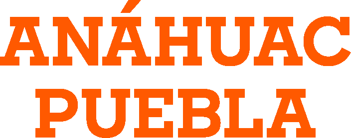
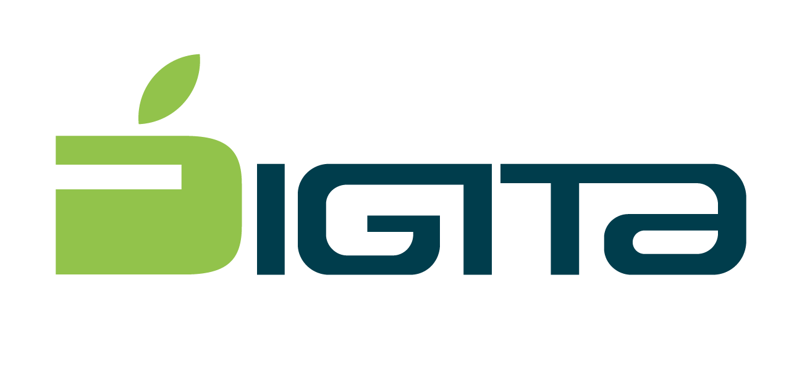

Avances y logros T.I
09:00 – 10:30 h
Sesión Online
T.I
Equipo de T.I Anáhuac Puebla- Inauguración
- Firma de convenio
📍 Sesión Online

Acelera el futuro · Innova hoy · Lidera el cambio
Ver Programa Completo →El Evento
Es una semana de alfabetización y concientización sobre diversos temas tecnológicos como: inteligencia artificial, ciberseguridad, innovación y transformación digital. Creado en el 2025 por la Universidad Anáhuac Puebla, en esta segunda edición el objetivo es que los asistentes puedan conocer las tendencias y herramientas que les permitirán mejorar su desempeño profesional y personal además de mantenerse a la vanguardia en el mundo digital.
Programa
Selecciona el día y luego la sesión de capacitación que te interesa.
Ponentes
Premios
Participa, aprende y gana. Durante la Semana de Transformación Digital repartiremos premios sorpresa entre los asistentes. ¡No te pierdas ninguna sesión!
Una sorpresa especial aguarda al primer ganador. ¿Serás tú?
El segundo premio es igual de emocionante. ¡No te lo pierdas!
Tercer ganador, tercer premio sorpresa. La suerte puede ser tuya.
El gran premio de la semana. El más esperado, el más sorprendente.
Aliados
